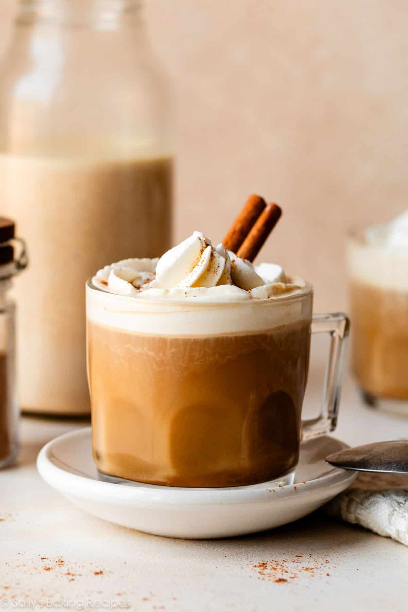

Sally's recipes

Ingredients
-
Half-and-half, Whole Milk, or Heavy Cream: For extra rich flavor and the
creamiest texture, use heavy cream. It’s delicious that way! But I
usually use half-and-half for something a little lighter. You can also
use whole milk. See below for best nondairy alternatives.
-
Pumpkin Puree: You don’t need a whole can, so you’ll have some left
over. Here are recipes to make with leftover pumpkin puree.
-
Pure Maple Syrup: You’ll appreciate that we’re using a natural sweetener
in this creamer. Make sure it’s the real deal, not the bottle labeled
“pancake syrup.”
-
Pumpkin Pie Spice: You can use either store-bought or homemade pumpkin
pie spice blend.
-
Cinnamon Sticks: Two cinnamon sticks infuse this creamer with so much
warming flavor. I always keep some on hand in the fall, for making
homemade apple cider and honeycrisp apple sangria, too!
Preparation
-
You just need a saucepan and a whisk, and in less than 15 minutes of
cooking, you have the perfect blend of fall flavors for your morning
coffee.
-
The base of coffee creamer is, obviously, dairy cream or half-and-half.
For a dairy-free alternative, try using coconut milk, cashew milk, oat
milk, or almond milk. Full-fat coconut milk will give you the thickest,
creamiest result; other nondairy milks may be on the thinner side.
-
One favorite way to enjoy coffee in the fall? Add a splash of homemade
pumpkin creamer, then top with whipped cream and a sprinkle of cinnamon
or pumpkin pie spice. Talk about dreamy.